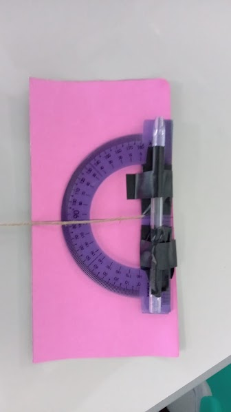

MATEMATICA
ATIVIDADE 1:
CONSTRUÇÃO DO TEODOLITO

O primeiro passso para iniciar esta atividade do Teodolito, seriam formar duplas o trios, e após isso cada grupo devia construir um Teodolito e escolhar dois objetos como uma árvore, um poste ou um prédio, cuja as alturas você gostaria de saber, e com isso tinhamos que ver qual é o ângulo que forma entre o chão e o topo do seu objeto, e
com a trena, descubrir qual é a distância entre o medidor e o objeto e também a altura do medidor. Após essas etapas serem concluidas , tinhamos que realizar um desenho para ilustrar a situação e anote todos os valores na tabela, e por fim calcular a altura do objeto. Após isso a entrega deveria ser através do classsroom, e com o resultado do grande esforço realizado por mim e minha dupla, conseguimos alcançar o tão esperado A.
ATIVIDADE 2:
CONSTRUÇÃO DO CÍRCULO TRIGNOMÉTRICO
O primeiro passso para iniciar esta atividade da Construção Do Circulo Trignometrico (conteudo na qual estavamos aprendendo), seriam formar duplas, e depois deviamos criar um circulo trignometrico com os seguintes materias Um pedaço de papelão 25cm x 25cm, Uma cartolina colorida 25cm x 25cm, Tesoura, Cola, Compasso, Transferidor e Régua. Depois de confeccionar tudo nosso dever era usar esse circulo para responder algumas questões de angulos. Após isso a entrega deveria ser através do classsroom, e com o resultado do grande esforço realizado por mim e meu grupo, conseguimos alcançar o tão esperado A.